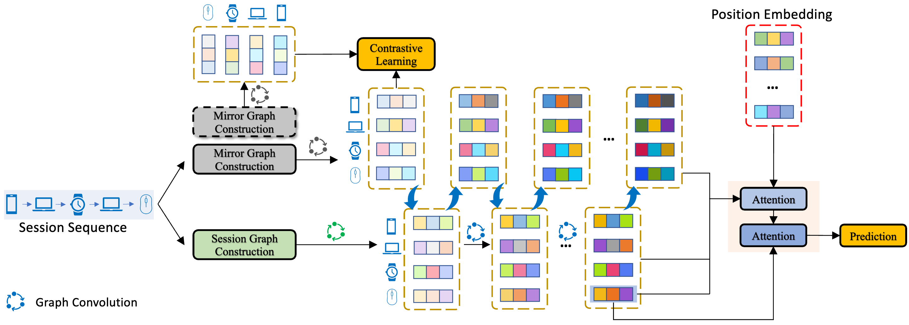
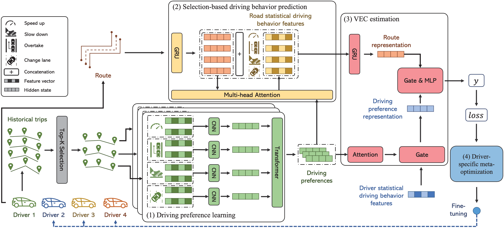
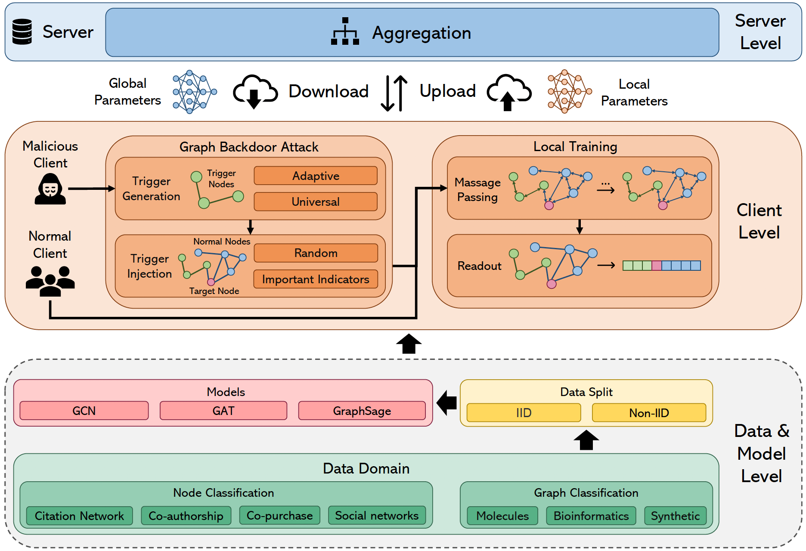
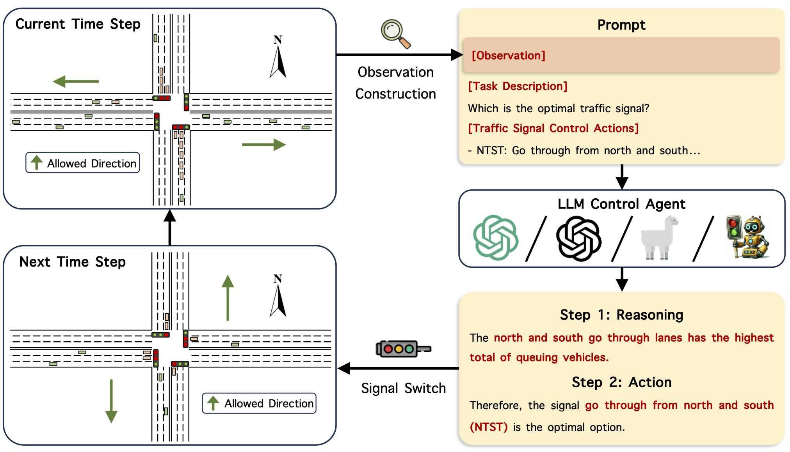
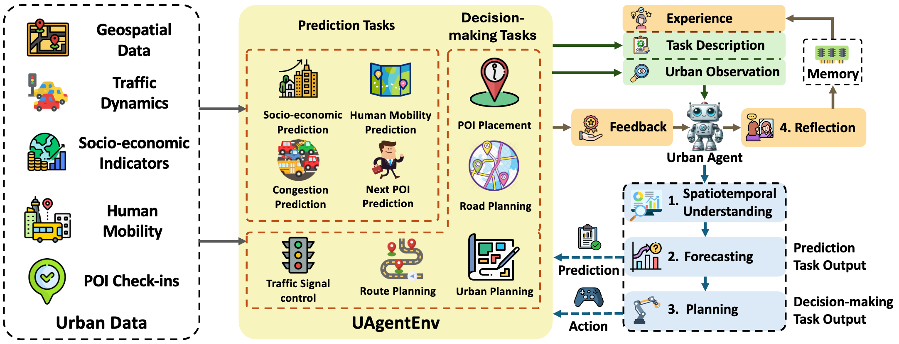

Publications
[SIGIR CCF-A] Siqi Lai, Erli Meng, Fan Zhang, Chenliang Li, Bin Wang, Aixin Sun (2022). 'An Attribute-Driven Mirror Graph Network for Session-based Recommendation', The 45th International ACM SIGIR Conference on Research and Development in Information Retrieval

[SIGKDD CCF-A] Siqi Lai, Weijia Zhang, Hao Liu (2023). 'A preference-aware meta-optimization framework for personalized vehicle energy consumption estimation', Proceedings of the 29th ACM SIGKDD Conference on Knowledge Discovery and Data Mining

[ECML-PAKDD CCF-B] Fan Liu, Siqi Lai, Yansong Ning, Hao Liu (2025). 'A Benchmark for Classification Backdoor Attacks on Federated Graph Neural Network', In Proceedings of the European Conference on Machine Learning and Principles and Practice of Knowledge Discovery in Databases

[SIGKDD CCF-A] Siqi Lai, Zhao Xu, Weijia Zhang, Hao Liu, Hui Xiong (2025).
'LLMLight: Large Language Models as Traffic Signal Control Agents',
Proceedings of the 30th ACM SIGKDD Conference on Knowledge Discovery and Data Mining | Gold Medal & Special Award at 50th International Exhibition of Inventions Geneva | Audience Appreciation Award of KDD'2025, ACM


[Submit to NeurIPS 2025] Siqi Lai, Yansong Ning, Zirui Yuan, Zhixi Chen, Hao Liu (2025). 'USTBench: Benchmarking and Dissecting Spatiotemporal Reasoning of LLMs as Urban Agents'
